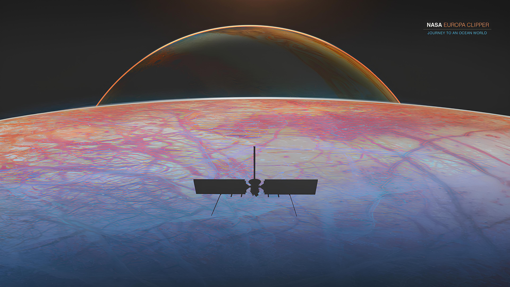

O ano de 2024 promete ser um marco na história da exploração espacial, e a NASA está na vanguarda dessa emocionante jornada. Se você é um jovem curioso sobre o que está por vir, prepare-se para se surpreender com as novidades que estão por vir!
Artemis II: Um Passo Rumo à Lua: A tão aguardada missão Artemis II está prestes a decolar! Esta será a primeira vez que astronautas embarcarão em uma jornada ao redor da Lua desde o programa Apollo. A missão não apenas marcará o retorno dos humanos à órbita lunar, mas também servirá como um teste crucial para futuras explorações, incluindo a ambiciosa meta de estabelecer uma presença sustentável na superfície lunar. Imagine as incríveis imagens e histórias que esses exploradores trarão de sua viagem!
Buscando Vida em Europa: Enquanto isso, a NASA está pronta para lançar a sonda Europa Clipper, que terá a missão de investigar as enigmáticas luas de Júpiter, em especial Europa. Esta lua gelada é um dos locais mais promissores na busca por vida extraterrestre, pois acredita-se que possua um vasto oceano sob sua crosta de gelo. A sonda será equipada com tecnologia de ponta para estudar a composição da superfície e as características do ambiente, em busca de sinais que possam indicar a existência de vida. Quem sabe o que poderemos descobrir?

Essas são apenas algumas das fascinantes iniciativas que a NASA tem em andamento para 2024. Fique atento, pois o cosmos está prestes a se tornar um lugar ainda mais intrigante.